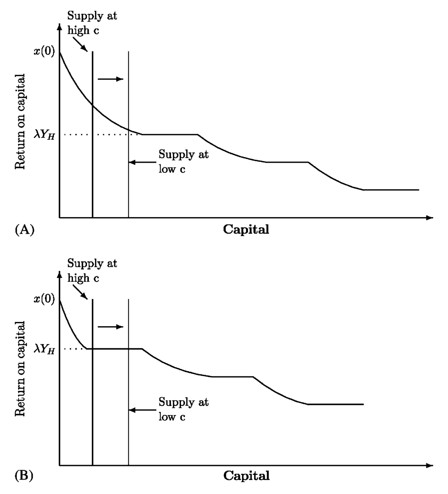
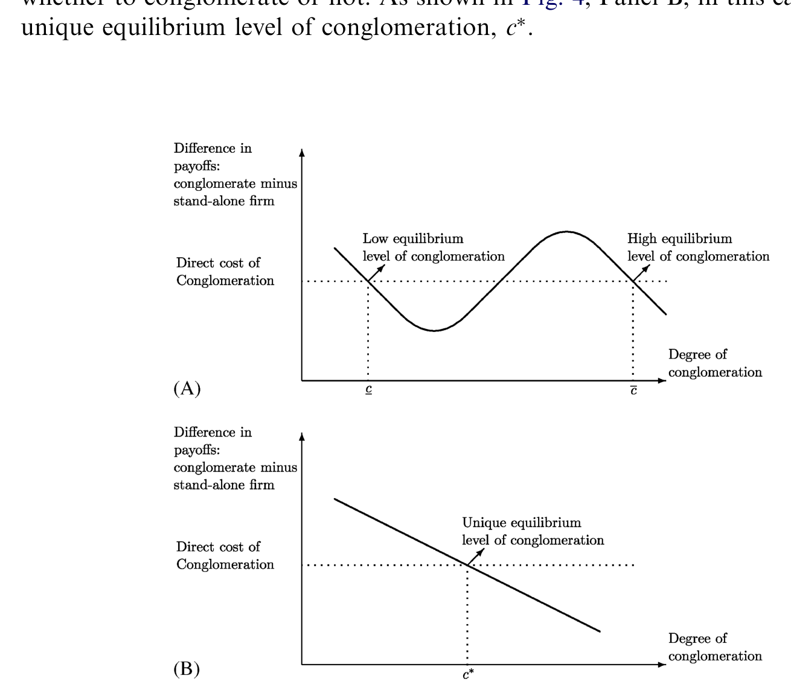
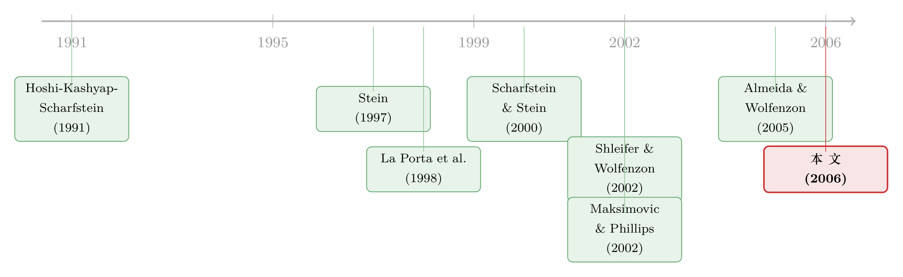

拆掉财阀，是好事还是坏事？——当「高效」的内部资本市场，偷走了别人的钱
本文读的是 Almeida & Wolfenzon (2006, Journal of Financial Economics)：他们用一个一般均衡模型证明，即便企业集团的内部资本市场是「高效」的——也就是说，它确实把钱配给了集团里最好的项目——它仍可能拖垮整个经济的资本配置效率。原因是一种被以往「孤立地看集团」的模型彻底忽略的负外部性：集团把钱留在自己内部，等于从外部市场抽走了供给，让那些真正高产、却融不到资的独立企业更难拿到钱。
1 一个让人左右为难的问题
上世纪九十年代，发展中国家——尤其是东亚——的企业集团（business group）集体陷入了舆论的风暴眼。在更早的几十年里，它们曾被奉为经济增长的发动机；可一到金融危机，政客和评论员转头就把增长放缓、危机频发的账，记在了这些庞然大物头上。韩国的财阀（chaebol）首当其冲，被要求拆分、重组。
争论的两方各执一词，而且听上去都很有道理。
反对拆分的人说：在制度不健全的地方，集团是「替代缺失的市场」而存在的（Khanna and Palepu, 1997）。外部资本市场那么落后，集团内部那套资本市场反而能把钱配得更有效率——把一家烂业务的钱，挪给集团里最有前途的那块业务。这正是 Stein (1997) 笔下著名的「挑选赢家」(winner-picking)：一个掌控多个项目的总部，因为信息更充分、激励更一致，能做外部市场做不到的高效再配置。
赞成拆分的人则反驳：集团恰恰是靠「抽干」外部市场的血，把那些没爹没娘的小独立企业活活饿死的。1998 年《金融时报》就记录过，在韩国财阀改革之前，独立企业想融到一笔钱有多难。
注意这里的张力：反对拆分的一方在夸集团的内部市场「高效」，赞成拆分的一方在骂集团让别人「融不到资」。问题在于——这两件事会不会是同一枚硬币的两面？ 一个内部市场越高效的集团，会不会反而越是把外部市场掏空？
这正是本文要捅破的那层窗户纸。在此之前，几乎所有研究内部资本市场的模型，都是把集团孤立地拿出来看（Stein, 2003 的综述即是明证），完全不考虑集团的存在会怎样反过来影响经济里的其他企业。可一旦你承认「集团让小企业融不到资」这件事，你就已经在说一种外部性了。于是一个自然的问题冒出来：高度的多元化（conglomeration），会不会真的损害外部资本市场的配置效率？如果会，那哪怕集团内部市场再高效，你也不能想当然地鼓励集团存在——因为高效内部市场的好处，可能被它强加给别人的负外部性抵消掉。
要回答这个问题，你需要一个同时容纳内部市场和外部市场、并刻画二者互动的一般均衡框架。本文就给了这样一个框架。
2 三个项目、一单位资本：把直觉一次讲透
作者的高明之处，是先用一个极简到近乎「卡通」的例子，把整篇论文的灵魂讲清楚，然后再上正式模型。我们就跟着这个例子走一遍。
设想一个经济体里有三个投资项目，生产率各不相同。投一单位资本进去：高产项目 H 产出 5，中产项目 M 产出 3，低产项目 L 产出 1。全经济只有一单位资本可供配置，而它此刻恰好待在最差的项目 L 手里。社会最优显然是把这一单位从 L 挪到 H，产出 5。
但这里有一个核心摩擦：现金流不能完全质押给外部投资者。记 \(\lambda\) 为可信地承诺给外人的利润上限比例，\(1-\lambda\) 是创业者自己留下的那部分（可理解为控制权私利，private benefits of control）。这个 \(\lambda\) 有一个绝妙的现实对应物——一国的投资者保护水平（La Porta et al., 1998）：保护越差，能质押出去的越少，\(\lambda\) 越低。
这一步是整篇论文的支点：低 \(\lambda\) 意味着，即使你的项目比对手赚得多，你也未必能把足够高的回报「承诺」出去，从而把资本从对手手里吸引过来。于是一些社会上本该发生的再配置，就这么没发生。
第一种经济：三家都是独立企业。 此时所有再配置都得走外部市场。L 可以自己留着，产出 1；也可以把这一单位供给别人。受质押约束，M 最多能付 \(3\lambda\)，H 最多能付 \(5\lambda\)。所以一旦决定供给市场，L 会把钱给 H，全经济产出 5。但当质押度很低（\(\lambda<\tfrac{1}{5}\)）时，\(5\lambda<1\)，L 宁可自己留着也不供给市场。
第二种经济：L 和 M 组成一个两项目集团，H 是独立企业。 集团可以把钱留在 L（得 1），可以内部挪给 M（得 3），也可以外部挪给 H（得 \(5\lambda\)）。集团总会再配置（因为 \(\max\{3,5\lambda\}>1\)）；但当 \(\lambda<\tfrac{3}{5}\) 时，它会把钱内部挪给 M（拿满 3），而不是外部挪给 H（只能拿 \(5\lambda\)）。
把两种经济的「最优选择」并排写出来，整个故事就跃然纸上：
差别就在那个被圈出来的 \(3\) 上。独立企业面对的是同一把质押的尺子，它比较的是 \(3\lambda\) 与 \(5\lambda\)，于是它会按社会最优的顺序排序，把钱送给 H。集团则不同：它只对集团外的企业有质押问题，对集团内的项目，质押度等于 1（owner-manager 拿走了所有私利，这正是 Stein 1997 的同一假设）。所以集团比较的是 \(3\)（内部，满额）与 \(5\lambda\)（外部，打折），天然偏向内部。
于是反转出现了。当 \(\tfrac{1}{5}\le\lambda<\tfrac{3}{5}\) 时：没有集团，经济产出 5；有了集团，经济产出 3。这个无效率，恰恰是因为集团在做一次私下里完全高效的再配置——它确实把钱配给了自己手里最好的项目 M。这就是本文识别出的、内部资本市场那个全新的（均衡层面的）成本。
3 非单调：投资者保护的「中间地带」最危险
这个卡通例子还顺手交出了本文最漂亮的预测：内部资本市场对均衡配置的影响，关于 \(\lambda\) 是非单调的。
- \(\lambda<\tfrac{1}{5}\)（保护极差）：外部市场烂到根本没法运转，高产的 H 无论如何也吸不到资。此时集团把钱从 L（产出 1）挪到 M（产出 3）反而是好事——有再配置总比没有强。集团是有益的。
- \(\tfrac{1}{5}\le\lambda<\tfrac{3}{5}\)（中间地带）：外部市场已经有潜力运转良好（H 本来能拿到钱），但它对集团的存在很敏感。集团一把钱锁在内部，就把本该流向 H 的供给抽走了。此时集团是有害的，拆掉它经济会更好。
- \(\lambda\ge\tfrac{3}{5}\)（保护良好）：H 能开出足够高的回报，集团的内部偏向自动消失，无论多元化程度多高，经济都能实现高效配置。集团无关紧要。
换句话说，集团的负外部性，对那些处于「中等金融发展水平」的国家最为致命。这恰好能解释韩国的故事：财阀在资本市场发展的早期阶段功不可没，但当市场制度逐渐成熟、韩国走到了那个敏感的中间地带，财阀反而可能变成了拖累。改革之后更多资金流向了独立企业（Economist, 2003），与模型的味道完全吻合。
4 从卡通到正式模型：把外部市场真正「画」出来
卡通例子有四个「作弊」之处：资本极度稀缺（只有一单位）、资本的位置和生产率分布被人为指定、外部市场没有被显式建模、集团的形成被当成外生。正式模型把这四点逐一补齐。
时间有三期 \(t_0,t_1,t_2\)。\(t_0\) 时一个测度为 1 的项目集合 \(J\) 待启动，创业者选择把项目办成独立企业还是集团（本文聚焦两项目集团，但结论对任意有限规模成立）。项目生产率在 \(t_0\) 未知，\(t_1\) 之前成为公共信息：恰有比例 \(p_L,p_M,p_H\) 的项目分别是 L、M、H 型。\(t_1\) 时可以再配置资本——走外部市场，或（若在集团内）走内部市场。投资者手里有总量为 \(K\) 的资本，且经济存在总量上的资本约束（资本相对于经济的吸纳能力是稀缺的）——这是负外部性能产生「一阶」影响的关键前提。
技术上有两条假设值得点出：项目是「剧烈递减规模」的，每个项目只有头两单位投资能产生现金流（\(Y_H>Y_M>Y_L\ge 0\)），多投无益；此外 \(t_1\) 时还有一项对所有人开放的「通用技术」(general technology) \(x(\omega)\)，其单位回报随投入总量 \(\omega\) 递减。假设 \(Y_M>x(0)\) 保证了好项目、中项目都比通用技术强，坏项目最差。
记 \(c\) 为落入集团的项目比例，于是有 \(c/2\) 个集团、\(1-c\) 个独立企业，\(c\) 就是经济的多元化程度。\(t_1\) 的外部市场上，项目被分成三类：清算并把资本供给市场的集合 \(S\)、寻求融资的集合 \(C\)、以及那些既不供给也不索取、只在内部腾挪的集团项目集合 \(O\)。所有合约都受同一个质押参数 \(\lambda\) 约束。
正式模型的核心机制和卡通例子一模一样，但现在你能看清那条因果链：多元化程度 \(c\) 上升 → 更多本该被清算供给市场的资本被锁进集团内部 → 外部市场的资本供给下降 → 均衡回报率被推高 → 高产但缺钱的独立企业更难融到资 → 配置效率下降。 这正是图 3 想表达的——抬高多元化程度，如何挤压再配置市场上的资本供给。

Figure 3: Effect of an increase in the degree of conglomeration in the date-t reallocation market. The
请注意，这条链里没有任何一环要求集团内部市场是「低效」的。集团始终在做对自己最优的事；无效率纯粹是均衡互动的产物。这就是本文相对于以往文献（Shin and Stulz, 1998; Rajan et al., 2000; Scharfstein and Stein, 2000 等「内部市场黑暗面」研究）最根本的分野：那些模型把集团孤立地看，因此永远生不出均衡含义；本文把内、外两个市场的互动摆上台面，于是逼出了一个全新的理论洞见。
5 当多元化变成内生：为什么经济会「卡」在坏均衡里
如果到此为止，你或许会反问：既然多元化在中间地带有害，为什么市场不自己把它消解掉？毕竟，要不要组建集团，是创业者自己的选择。
这就是本文最后一步、也是最微妙的一步：把多元化程度内生化。
关键在于一个正反馈。当多元化程度高时，外部市场因为供给被抽走而运转得很差；而一个糟糕的外部市场，恰恰抬高了创业者去组建集团的动机——因为集团比独立企业更少依赖外部市场。于是，当一个创业者预期别人都会去搞集团时，他自己也更倾向于搞集团。这种「你建我也建」的策略互补，制造出多重均衡：经济既可能停在低多元化的均衡，也可能停在高多元化的均衡。

Figure 4: Equilibrium levels of conglomeration. The vertical axis represents the private payoff of a
而本文证明，社会福利在低多元化均衡里反而可能更高。这就导出了一个令人不安的结论：一个国家完全可能被困在一个过度多元化的均衡里，而每一个具体的集团都没有任何单独拆分自己的动机——因为单方面拆分，只会让自己暴露在那个仍然糟糕的外部市场面前。这也正是为什么本文会说，拆分集团可能需要政府介入：这是一个协调失败，靠市场自发的力量解不开。
（顺带一提，本文是作者这条研究线的一块拼图。他们的姊妹篇专门讨论了举债如何在均衡中「逼」出资本的高效配置，思路同源，关于这一点可参见《举债，竟是为了「逼」别人把好钱让出来》。而把「内部资本市场」拿到现实数据里做活体解剖的努力，则可参见《拆开来看，钱才流到对的地方》。）
6 文献脉络
把这篇论文放回它生长的土壤里，脉络就清晰了。
最早的一支，是关于内部资本市场到底「行不行」的实证与理论之争。Hoshi, Kashyap and Scharfstein (1991) 用日本工业集团的数据，给「集团缓解了成员企业的流动性约束」提供了早期证据。Stein (1997) 则在理论上奠定了「挑选赢家」的乐观叙事——总部因激励一致而能做高效再配置。紧接着，反方登场：Scharfstein and Stein (2000) 描绘了内部市场的「黑暗面」，部门间的寻租会扭曲投资。但无论乐观还是悲观，这一整支文献都把集团孤立地看。
另一支，是 La Porta et al. (1998) 开创的法与金融传统——把「投资者保护」量化成解释各国金融发展的核心变量。Shleifer and Wolfenzon (2002) 进一步把投资者保护写进一个均衡模型，刻画它如何决定一国股权市场的规模。本文正是接过了这把「质押度 \(\lambda\) = 投资者保护」的钥匙。

至于「均衡中的资本配置」这条线，Maksimovic and Phillips (2002) 是个重要的例外——他们在均衡框架里分析集团的配置决策，但没有金融摩擦的角色。而本文作者自己的 Almeida and Wolfenzon (2005) 则在均衡中研究了外部融资与配置的关系。本文的位置，就是把「集团内部资本市场的均衡效应」这块以往无人填补的空白，正式补了上去——它既不是简单地说集团好或坏，而是指出：集团可以同时做到内部高效、又损害全经济的均衡配置。
7 评论与延伸（Q&A + 研究方向）
(a) 几个可能的疑问
Q：这跟「内部市场黑暗面」（Scharfstein-Stein 那一支）到底有什么不一样？
本质区别在于「无效率从哪来」。黑暗面文献说，无效率来自集团内部——部门寻租、社会主义式的平均分配，让钱配错了地方。本文则假设集团内部完全高效（挑选赢家百分百成功），无效率纯粹来自外部——集团把供给抽离市场，伤害了集团外的高产企业。前者是「集团把自己搞砸了」，后者是「高效的集团把别人搞砸了」。
Q：凭什么说集团内部的质押度等于 1？这是不是太强了？
这是为了把论证逼到极限的「最有利于集团」的假设：哪怕集团内部市场完美无瑕，结论依然成立。现实中集团内部当然也有代理问题，但那只会强化而非削弱本文的负面结论。把内部质押度设为 1，是为了证明负外部性不依赖于「内部市场不行」这个前提。
Q：那个「非单调」结论，是不是模型设定凑出来的巧合？
不是。它有清晰的经济机制：保护极差时外部市场根本死了，集团的再配置是雪中送炭；保护极好时外部市场自己能运转，集团无关紧要；唯有中间地带，外部市场「有潜力但脆弱」，对供给的抽离最敏感。三段式的临界值（例子里是 \(\tfrac{1}{5}\) 和 \(\tfrac{3}{5}\)）正是 \(5\lambda\) 与 \(1\)、\(5\lambda\) 与 \(3\) 两个比较的交点。
Q：既然过度多元化损害福利，为什么市场不自我纠正？
因为存在策略互补带来的协调失败。糟糕的外部市场抬高了每个人组建集团的动机，「你建我也建」把经济推向高多元化均衡。单个集团没有动机单方面拆分——拆了只会把自己暴露给那个仍然糟糕的外部市场。这是个囚徒困境式的坏均衡，需要外部协调（政府）才能跳出。
Q：模型的总量资本约束（\(K\) 有限）有多重要？
至关重要。负外部性要能产生「一阶」影响，前提是总资本足够稀缺，以至于集团锁住的那部分供给能撬动均衡回报率。如果资本充裕到要多少有多少，集团抽走一点供给无关痛痒，外部性就退化为零。这也提示了实证上该去哪里找证据：资本越稀缺的经济，效应应越明显。
Q：这对今天的政策还有意义吗，还是只是九十年代东亚的旧账？
机制是普适的。任何「制度处于中游、且大量公司被家族集团控制」的经济体，都可能落在那个危险的中间地带。它给出的政策含义很反直觉：你不能只看集团内部配置是否高效就为它背书，必须把它对独立企业融资的挤出效应一并算进去。
(b) 几个可能的研究问题与提案
1. 集团多元化与独立企业的信用利差。
【经济故事】本文最核心、却最难直接检验的预测是：高多元化挤压了独立企业的外部融资。信用债市场是检验这一点的理想场域——若理论成立，在多元化程度高的国家/年份，独立（非集团）企业的债券发行规模应更小、信用利差应更高，且这种差异在「中等投资者保护」的国家最显著。 【可行性】中。数据可用 Capital IQ / Dealogic 的全球公司债发行数据，叠加各国集团归属（如 Claessens et al. 2000、Faccio-Lang 2002 的所有权数据）与 La Porta 系投资者保护指标。识别难点在多元化程度的内生性——可考虑用历史/政治因素（本文反复强调集团归属很大程度由历史与政治压力决定）作为工具变量。
2. 用「外资进入」作为外生的供给冲击。
【经济故事】本文的外部性走的是「外部市场资本供给」这条管道。如果外资大举进入，相当于外生地放松了总量资本约束，理论预测：集团的负外部性应被削弱，独立企业的融资改善。这正好把本文与外资持有人文献接上了。 【可行性】中高。可利用各国资本账户开放、QFII 类额度放开等准自然实验（参见《外资真是「蝗虫」吗？》所用的跨国框架），做事件研究或 DiD，比较开放前后集团企业与独立企业融资条件的相对变化。
3. 内部市场的「再配置频率」与外部市场流动性的此消彼长。
【经济故事】模型说集团再配置更频繁，但这些再配置未必社会最优；而它的副作用是抽干外部市场。可以构造一个度量：集团内部资本腾挪的活跃度，与同一经济中外部资本市场（如二级股权、公司债）流动性之间，是否存在系统性的负相关。 【可行性】中。集团内部腾挪难以直接观测，需借助分部数据（segment data）或关联交易披露做代理；外部流动性可用成交、价差等标准指标。识别仍是软肋，更适合作为「描述性事实 + 机制暗示」的研究。
4. 危机中的多元化：避风港还是放大器？
【经济故事】本文是关于「正常时期」的配置效率。一个自然的延伸是：在信用收缩期，集团的内部市场究竟是成员企业的避风港，还是因为锁住稀缺资本、加剧了独立企业的融资荒，从而放大了危机？这与公司多元化的「信用保险」叙事直接对话。 【可行性】高。可锚定一次明确的信用冲击（如 2008、或某国本币危机），用 DiD 比较集团成员与独立企业在危机中的投资、融资与存活率，并按危机前投资者保护水平分组检验非单调性。
8 我的判断
这篇论文的贡献是理论性的、且是干净的：它在一个被无数人研究过的题目（内部资本市场到底好不好）上，硬是辟出了一个全新的维度——均衡外部性。它最漂亮的地方，是把「集团高效」与「集团有害」这两件看似矛盾的事，证明为可以同时成立；并由此给出一个可检验、且违反直觉的非单调预测（危险的是中等保护水平的国家），以及一个有政策分量的多重均衡结论（市场不会自我纠偏，可能需要政府介入）。这些都是「孤立看集团」的模型永远生不出来的。
但我对它的识别——确切说是经验检验的可落地性——存有保留。模型的全部火力依赖一个核心前提：总量资本足够稀缺，以至于集团抽走的那点供给能撬动均衡回报率。这个前提在封闭、欠发达的九十年代东亚或许成立，但在今天高度一体化的全球资本市场里，一国独立企业真的会因为本国财阀锁住资本而融不到钱吗？还是它们可以转向外资、转向离岸市场？换言之，本文的负外部性有多强，取决于资本市场的「分割程度」有多深——而这恰恰是模型外生给定、却最该被检验的那个量。
我接下来最想看到的，是有人把这套理论拖到数据里逐年对账：找到一个能外生改变「外部市场资本供给」的冲击（外资开放是最自然的候选），看独立企业的融资条件是否如理论所言地随多元化程度而恶化、并在中等保护水平的国家最显著。如果这条链能在数据里走通，这篇 2006 年的纯理论论文，就不只是一个优雅的反例，而会成为「该不该拆财阀」这场二十年老争论的一锤定音。
参考文献
- Almeida, H., Wolfenzon, D. (2006). Should business groups be dismantled? The equilibrium costs of efficient internal capital markets. Journal of Financial Economics 79(1), 99–144.
- Almeida, H., Wolfenzon, D. (2005). The effect of external finance on the equilibrium allocation of capital. Journal of Financial Economics 75(1), 133–164.
- Hoshi, T., Kashyap, A., Scharfstein, D. (1991). Corporate structure, liquidity and investment: evidence from Japanese industrial groups. Quarterly Journal of Economics 106(1), 33–60.
- Khanna, T., Palepu, K. (1997). Why focused strategies may be wrong for emerging countries. Harvard Business Review 75, 41–51.
- La Porta, R., Lopez-de-Silanes, F., Shleifer, A., Vishny, R. (1998). Law and finance. Journal of Political Economy 106(6), 1113–1155.
- Maksimovic, V., Phillips, G. (2002). Do conglomerate firms allocate resources inefficiently across industries? Journal of Finance 57(2), 721–769.
- Rajan, R., Servaes, H., Zingales, L. (2000). The cost of diversity: the diversification discount and inefficient investment. Journal of Finance 55(1), 35–80.
- Scharfstein, D., Stein, J. (2000). The dark side of internal capital markets: divisional rent-seeking and inefficient investment. Journal of Finance 55(6), 2537–2564.
- Shin, H., Stulz, R. (1998). Are internal capital markets efficient? Quarterly Journal of Economics 113(2), 531–552.
- Shleifer, A., Wolfenzon, D. (2002). Investor protection and equity markets. Journal of Financial Economics 66(1), 3–27.
- Stein, J. (1997). Internal capital markets and the competition for corporate resources. Journal of Finance 52(1), 111–133.